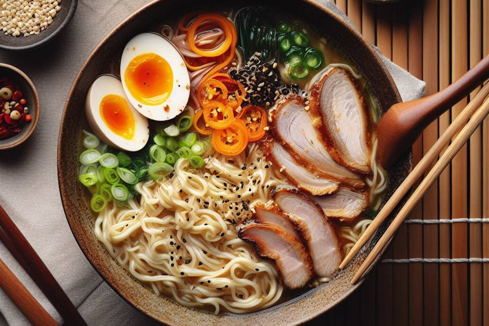
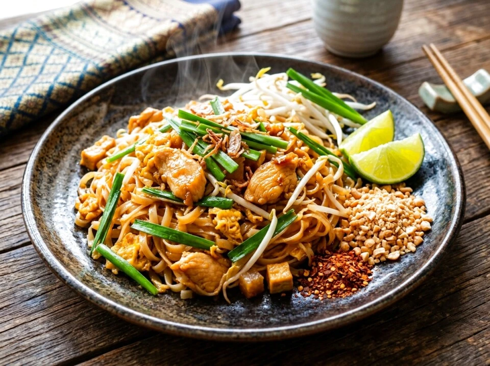
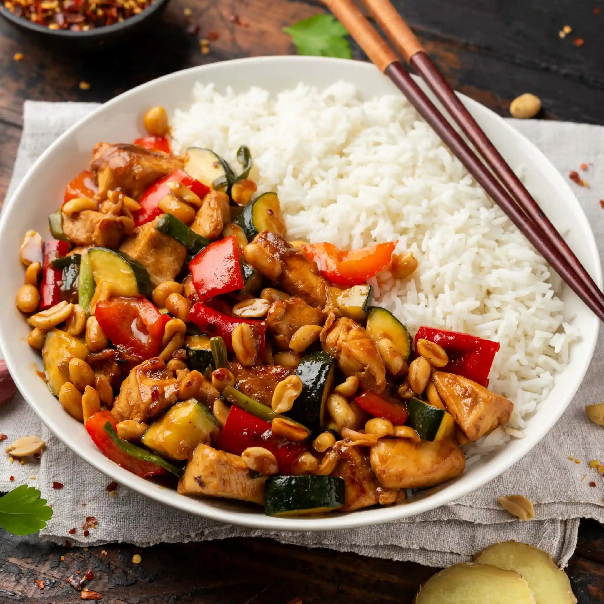
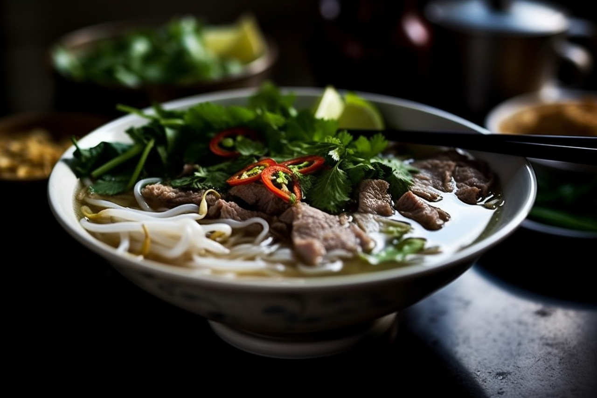
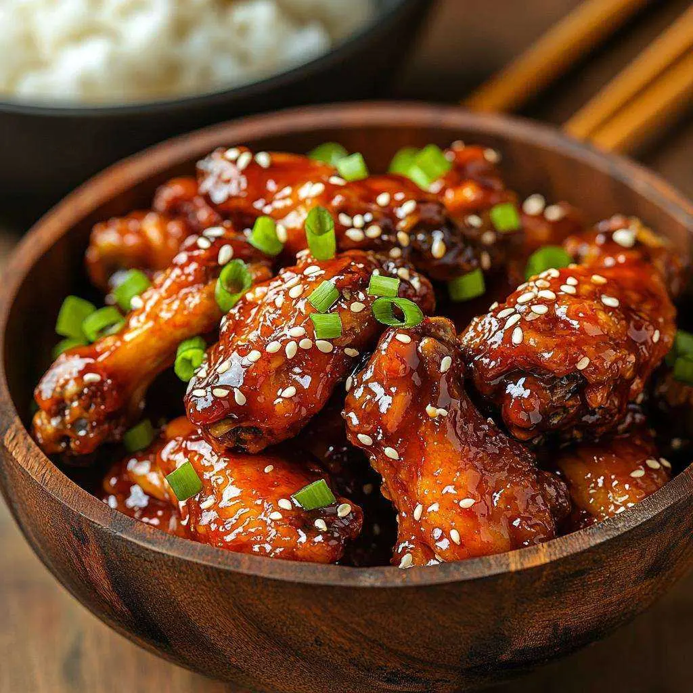
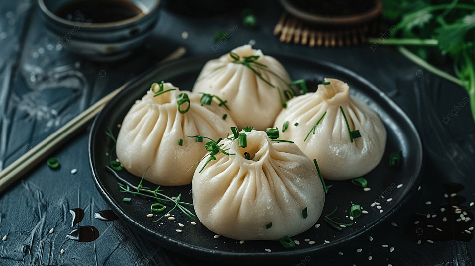

Dlaczego warto pokochać kuchnię azjatycką?
Azja słynie z niezwykle różnorodnej kuchni, która zachwyca bogactwem smaków, aromatów i tradycji przekazywanych z pokolenia na pokolenie. Każdy region kontynentu posiada własne specjały, przygotowywane według unikalnych receptur i z wykorzystaniem lokalnych składników. To właśnie dzięki tej różnorodności kuchnia azjatycka jest uznawana za jedną z najbardziej interesujących na świecie.
Podróżując po tym kontynencie, warto spróbować lokalnych potraw, które od lat są częścią codziennego życia mieszkańców. Łączą one w sobie tradycję, kulturę oraz charakterystyczne dla danego kraju przyprawy i sposoby przygotowywania.
Poniżej znajdziesz kilka najpopularniejszych dań kuchni azjatyckiej, które zdobyły uznanie nie tylko w swoich krajach pochodzenia, ale również na całym świecie. Spróbowanie ich to doskonała okazja do poznania wyjątkowych smaków kuchni azjatyckiej.
Popularne Dania

Ramen Japoński
- Jeden z najpopularniejszych symboli japońskiej kuchni.
- Zachwyca aromatycznym bulionem i bogactwem smaków.
- Idealny na chłodniejsze dni, ponieważ doskonale rozgrzewa.
- ozwala poczuć atmosferę tradycyjnych japońskich restauracji.

Pad Thai
- Kultowe danie tajskiej kuchni ulicznej.
- Łączy słodkie, kwaśne i lekko pikantne nuty w jednym daniu.
- Idealny dla miłośników wyrazistych i zrównoważonych smaków.
- Doskonale oddaje charakter i różnorodność tajskiej kuchni.

Kurczak Gong Bao
- Jedno z najbardziej rozpoznawalnych dań kuchni chińskiej.
- Pochodzi z regionu Syczuan, znanego z intensywnych i wyrazistych smaków.
- Łączy soczystego kurczaka z orzeszkami, papryczką chili i aromatycznym sosem.
- Charakteryzuje się idealnym balansem ostrości, słodyczy i lekko kwaśnych nut.
- To jedno z tych dań, które trudno pomylić z jakimkolwiek innym w kuchni chińskiej.

Wietnamskie Pho
- Uznawane za narodowe danie Wietnamu.
- Idealne dla miłośników lekkich, ale aromatycznych potraw.
- Zachwyca klarownym bulionem i świeżymi dodatkami.
- To danie, które najlepiej oddaje codzienny charakter wietnamskiej kuchni.

Kurczak po koreańsku
- Znany z wyjątkowo chrupiącej panierki i intensywnych sosów.
- Idealny dla fanów piekantnych dań
- Jedno z najpopularniejszych dań koreańskiego street foodu.
- Jest nieodłącznym elementem spotkań towarzyskich w Korei.
- Jest jednym z najbardziej rozpoznawalnych dań koreańskiej kuchni.

Bao Bun
- Zachwyca miękkim i puszystym ciastem gotowanym na parze.
- Łączy delikatną strukturę z wyrazistym nadzieniem.
- Można je spotkać w wielu wariantach – od mięsnych po wegetariańskie.
- Jedno z najbardziej charakterystycznych dań azjatyckiego street foodu.
- Łączy prostotę przygotowania z bogactwem smaków.